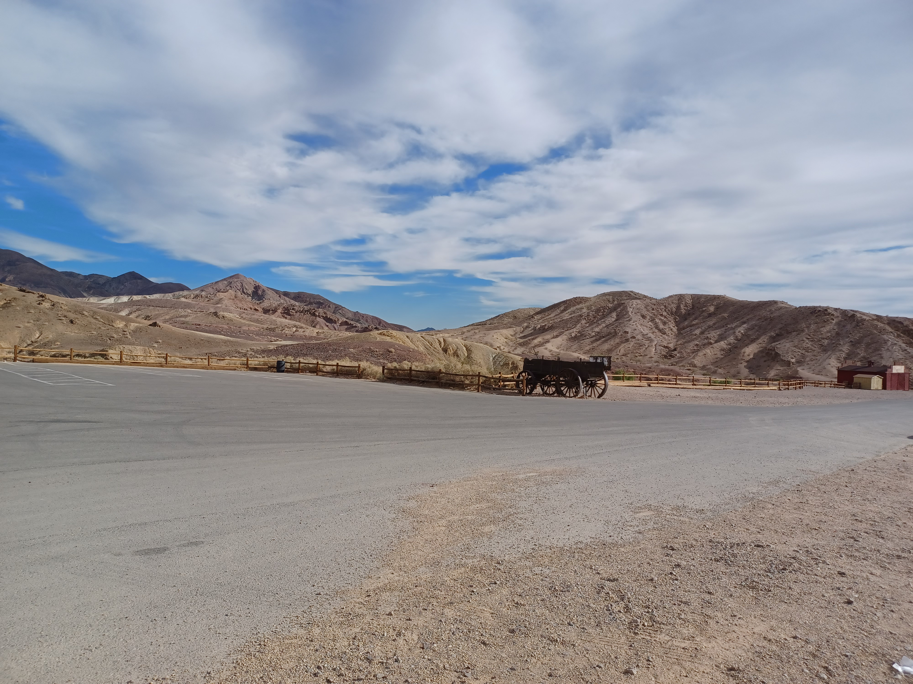
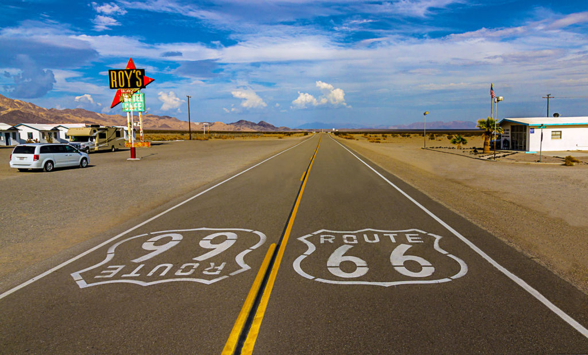
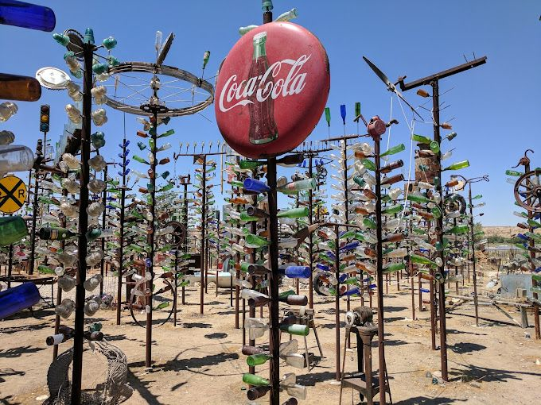
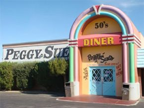
n
The Way And Time For Dinner & Bed
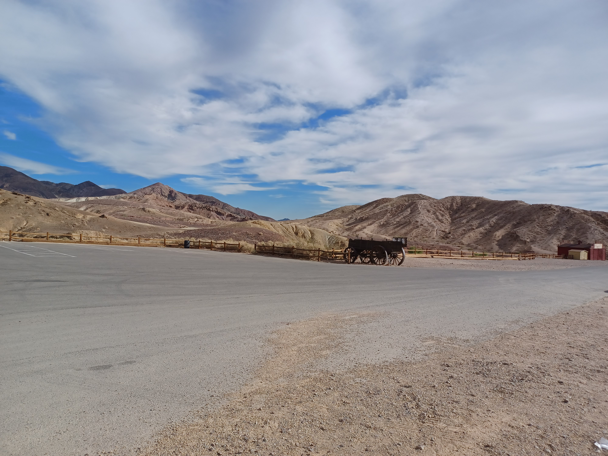
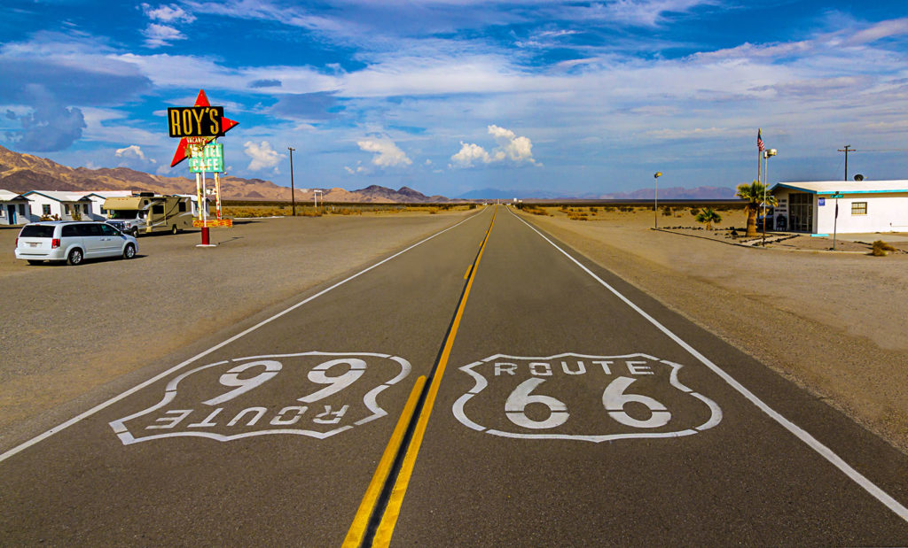
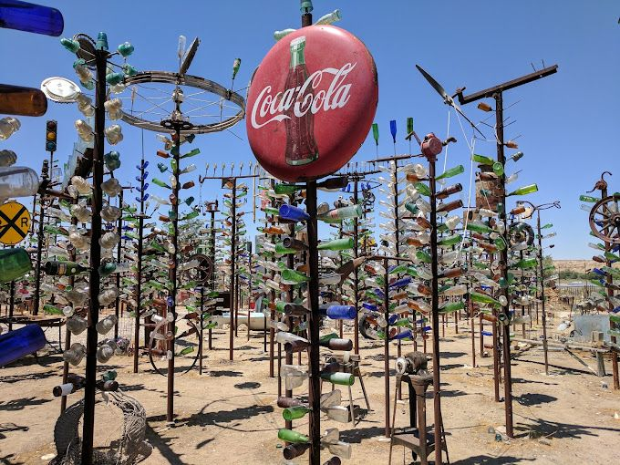
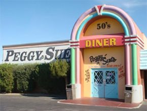
n
The Way And Time For Dinner & BedDay 9 Monday Oct 31
Needles, CA to San Bernardino, CA 361 miles
Attractions-
Elmer Long's Bottle Tree Ranch
Dominos for Dinner
We set out for Peggy Sues Diner in Yermo, California. But along the way Route66 was closed between Amboy and Ludlow exits off of Interstate 40. Here’s where we learned a valuable lesson, which I will convey to you.
Where the road was closed we had a choice of going south on another road that was right there, or to go back to Interstate 40. We chose the road going south, not wanting to go backwards. Big Mistake! We ended up lost in the desert, not really knowing which way to go. Everything turned out OK, but we lost a couple of hours. My recommendation is this: If you run into a situation like this, don’t just keep driving, like we did. Find a place to pull over and take out all your navigation accessories;maps,phones,apps, what have you. Find out where you are, and figure out the best way to continue. This will save you time in the long run. What we should have done was turn around and go back the way we came to the next Interstate 40 exit. It would have been a lot faster. But we did get to see a lot of open desert. Just a tip.
P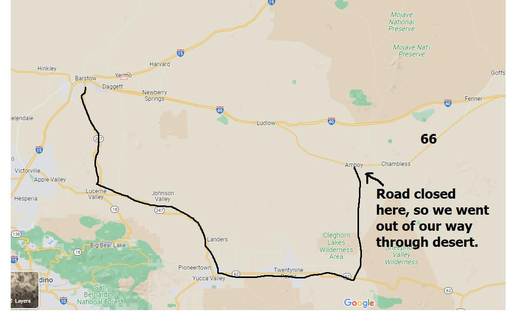 eggy Sue’s 50’s Diner
After our long trek through the desert we finally arrived at the wonderful Peggy Sue’s Diner.
Opened in 1954, this is the real thing. The Decor and Aura of the place is Route66. Food,service,people are excellent. This is definitely recommended for a Route66 stop. From here we headed up north a couple miles to the Calico Ghost Town.
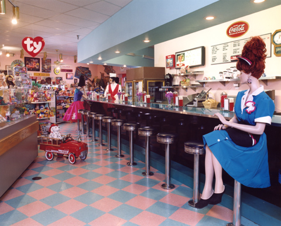
Calico Ghost Town
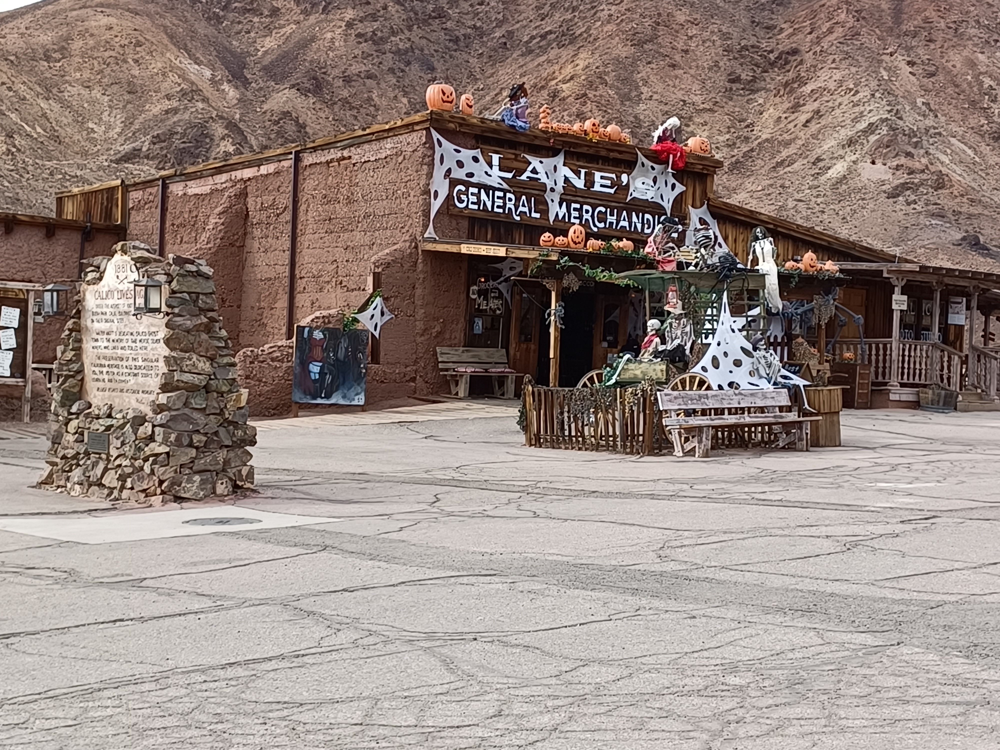 This is basically a modern rendition of an old west town. There’s some old stuff there, and the place is pretty 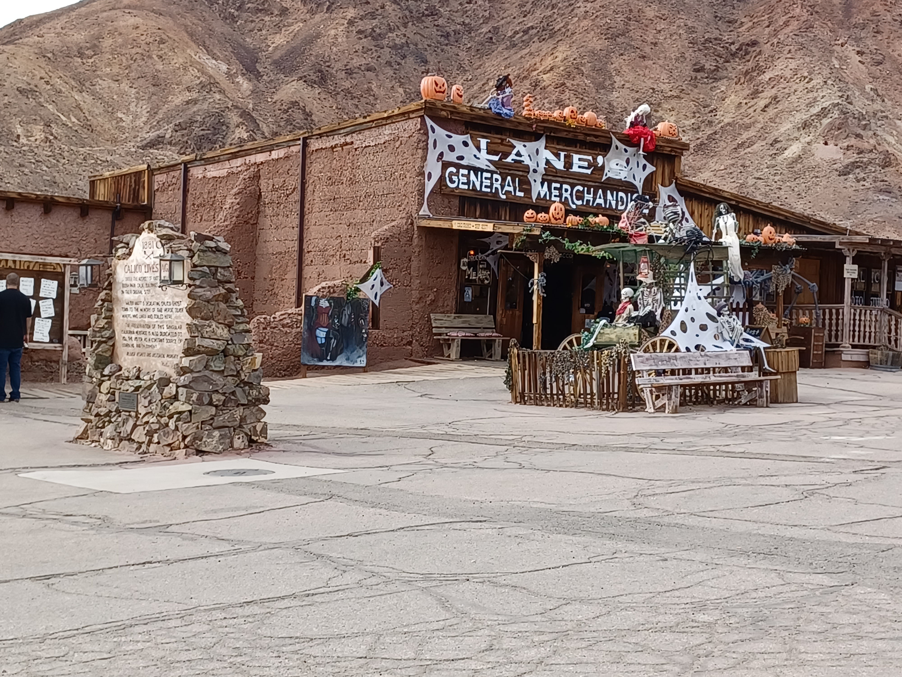 cool; worthy of a stop. It’s kind of like a theme you could see in Disney World, making it a great place for the kids to run around and check things out. Dorreen and I enjoyed it, but found it somewhat touristy (like a lot of Route66). We were hoping for an actual run down, falling apart, ghost town, but this isn’t that. But, we still had a good time. After a couple of hours, we hopped in the car and headed towards San Bernardino.
O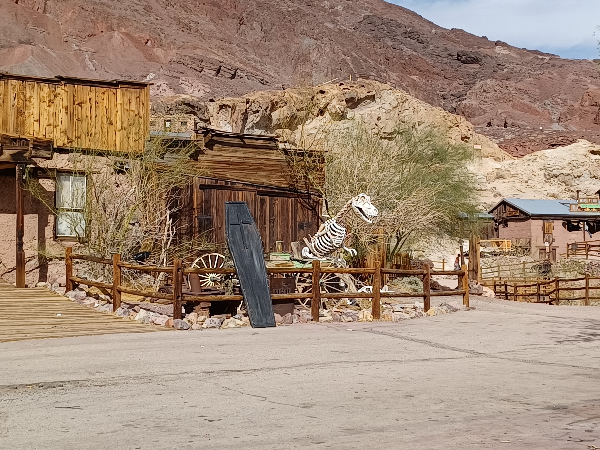
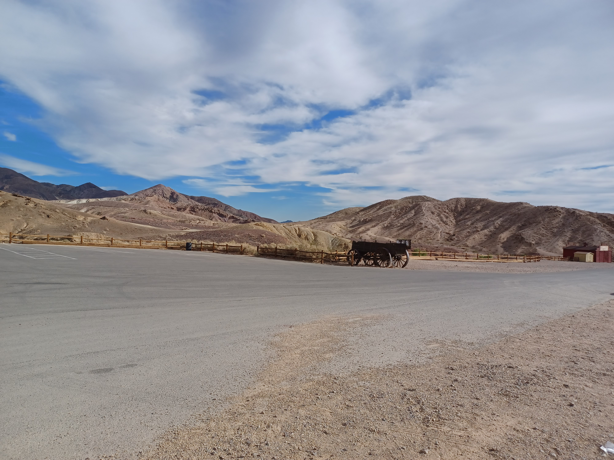
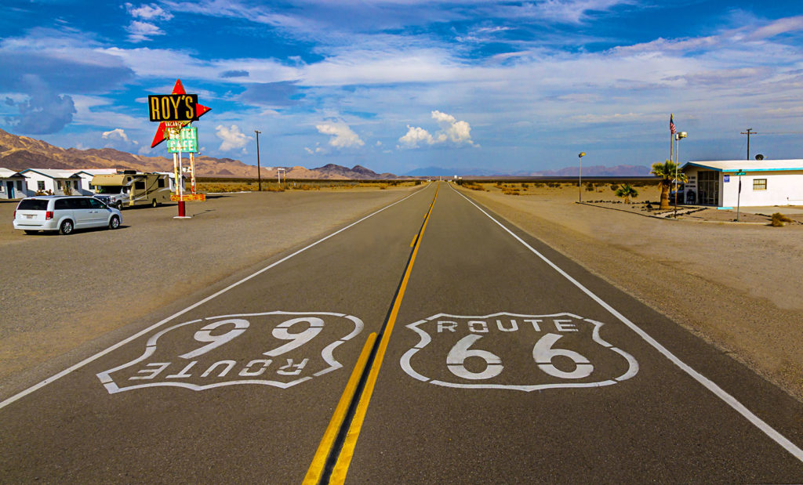
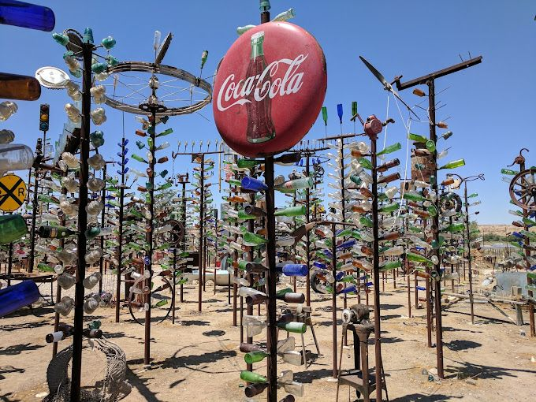
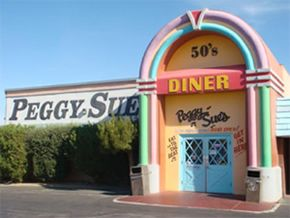
n
The Way And Time For Dinner & Bed
On our way to San Bernardino, we enjoyed the drive and went past Elmer Long’s Bottle Tree Ranch. We didn’t stop. We were getting kind of antsy to get to our Cruise Ship. I don’t even know if it was open. I know Elmer past away some time ago. You’ll have to check to see if it is open. If it is, it could be a fun place to check out, if you have the time.
We ended up at the Hampton Inn in San Bernardino. Nice place. We had Dominoes Pizza delivered. Drank some beer, then nighty night.